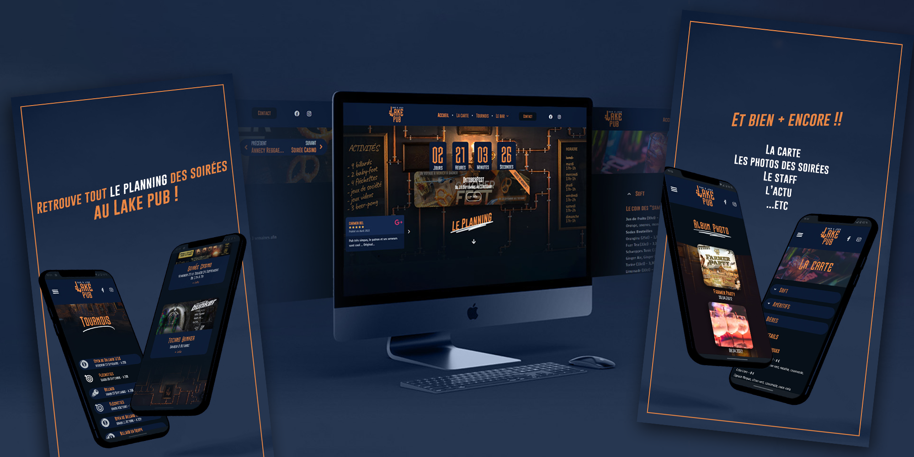
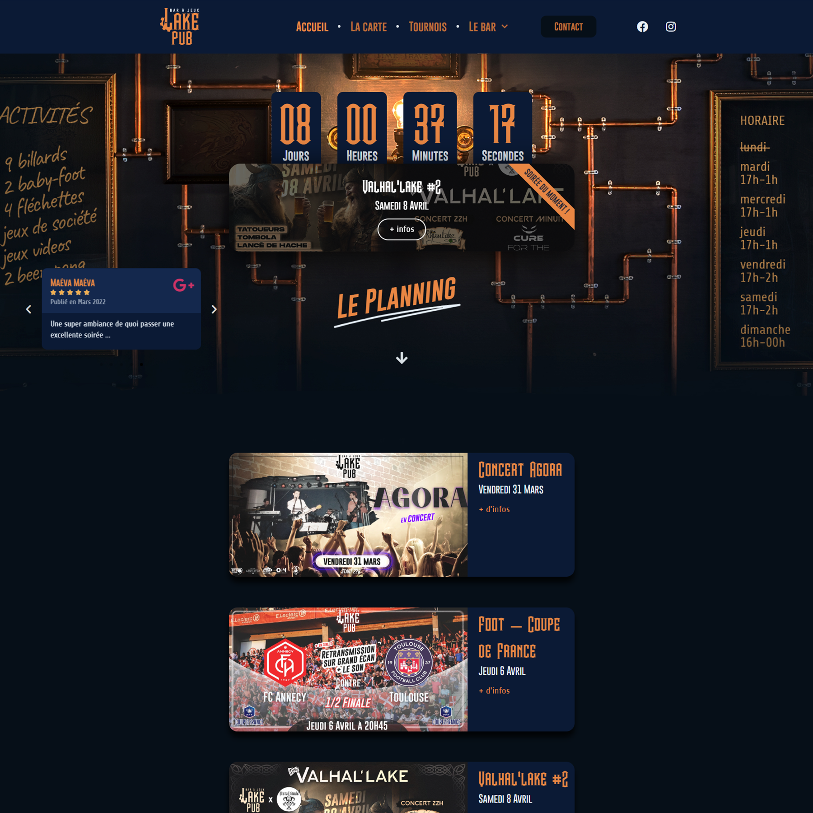

Moderniser la présence en ligne d'un établissement emblématique avec sa nouvelle identité.
Dans la continuité du travail d'identité visuelle réalisé pour le Lake Pub, ce projet consistait à remplacer le site web vieillissant par une interface contemporaine intégrant la nouvelle charte graphique de l'établissement.
La conception a débuté sur Figma pour le prototypage et l'architecture de l'information. Le développement a été réalisé sous WordPress avec Elementor Pro, complété par du CSS personnalisé pour les détails de finition.
Le site final comporte une dizaine de pages entièrement responsive — mobile, tablette, desktop — reflétant l'univers steampunk du Lake Pub tout en offrant une expérience utilisateur moderne et intuitive.
